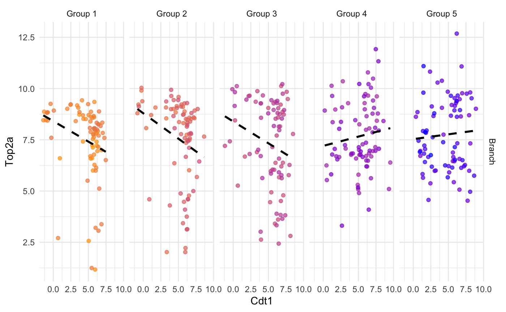

plotColouredExpression.Rdthe plotColouredExpression function plots an n-panel scatterplot of the gene pairs split by early, mid, and late in the sample ordering.
plotColouredExpression(
scHOT,
genes,
genes_delimeter = "_",
branches = NULL,
ranked_by = NULL,
subsetBranch = NULL,
n = 3,
fittedline = TRUE,
assayName = NULL
)A scHOT object.
is either a single character string with a delimeter, or a length two character vector
is the delimeter to split into two gene names if genes is provided as a single character
A character indicates that the colnames stored the branch information in colData
A character indicates that the colnames stored the ranking information of the cells in colData, such as trajectory time, if it is NULL, it will be ranked based on the branch information.
subsetBranch is a character vector containing the names of the branches to be plotted. If NULL it will plot all branches
number of panels to split ranked samples into, default 3.
logical default TRUE, add a lm straight line to the plot
the name of the assay that are used to plot.
ggplot a ggplot object of scatterplots of expression
split by sample ordering
data(liver)
scHOT_traj <- scHOT_buildFromMatrix(
mat = liver$liver_branch_hep,
cellData = list(pseudotime = liver$liver_pseudotime_hep),
positionType = "trajectory",
positionColData = "pseudotime")
scHOT_traj
#> class: scHOT
#> dim: 568 408
#> metadata(0):
#> assays(1): expression
#> rownames(568): 2810474O19Rik Abca1 ... Ahsg Epcam
#> rowData names(0):
#> colnames(408): E10.5D_3_02 E10.5D_2_01 ... E17.5D_1_01 F5A_E16.5
#> colData names(1): pseudotime
#> reducedDimNames(0):
#> mainExpName: NULL
#> altExpNames(0):
#> testingScaffold dim: 0 0
#> weightMatrix dim: 0 0
#> scHOT_output colnames (0):
#> param names (0):
#> position type: trajectory
plotColouredExpression(scHOT_traj, c("Cdt1","Top2a"), n = 5)
#> ranked_by information is not provided,
#> the expression data is ranked by the branches
#> branches information is not provided
#> Warning: Use of `gdf_sub$ExpressionGene1` is discouraged. Use `ExpressionGene1` instead.
#> Warning: Use of `gdf_sub$ExpressionGene2` is discouraged. Use `ExpressionGene2` instead.
#> Warning: Use of `gdf_sub$ExpressionGene1` is discouraged. Use `ExpressionGene1` instead.
#> Warning: Use of `gdf_sub$ExpressionGene2` is discouraged. Use `ExpressionGene2` instead.
#> `geom_smooth()` using formula 'y ~ x'
